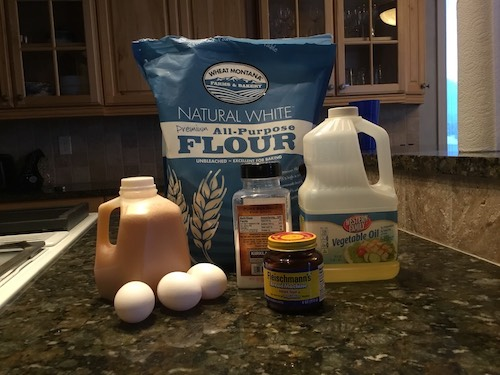
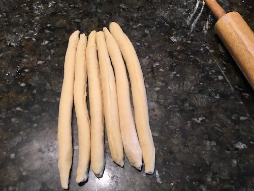
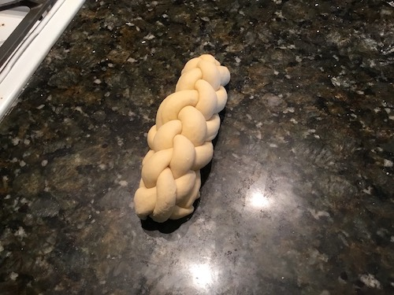
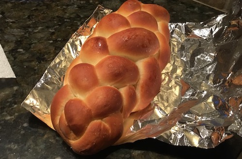

Better Challah Recipe by Claire
Supplies
- 1 cup warm water
- 1 full packet of Active Dry Yeast
- 2 tbsp of Vegetable Oil
- 1/2 cup and 1 tbsp Honey
- 3 Eggs
- 1/2 tbsp Salt
- 4 Cups unbleached all-purpose flour
- Aluminium foil
Step 1
In a large bowl, sprinkle yeast over barely warm water. Beat in honey, oil, 1 egg, 2 egg yolks (set the whites aside in a small container), and salt. Add the flour one cup at a time, beating after each addition, graduating to kneading with hands as dough thickens. Knead until smooth and elastic and no longer sticky, adding flour as needed. Cover with a damp clean cloth and let rise for 1 1/2 hours or until dough has doubled in bulk.
Step 2
Punch down the risen dough and turn out onto floured board. Knead for five minutes or so, adding flour as needed to keep from getting sticky. Divide dough into sections (strands for braid) the number depending on what kind of challah you want to make. Roll into long snake about 1 1/2 inches in diameter. Pinch the ends of the snakes together firmly and braid(refer to TODO: link to braid styles) Either leave as braid or form into a round braided loaf by bringing ends together, curving braid into a circle, pinch ends together. Grease two baking trays and place finished braid or round on each. Cover with towel and let rise about one hour.
Step 3
Preheat oven to 375°F (190°C). Beat the remaining egg and brush a generous amount over each braid. Bake at 375 degrees F (190 degrees C) for about 20 minutes. Then pull out and cover with aluminium foil. Bake for another 7-10 minutes. Bread should have a nice hollow sound when thumped on the bottom. Cool on a rack for at least one hour before slicing.